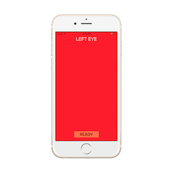
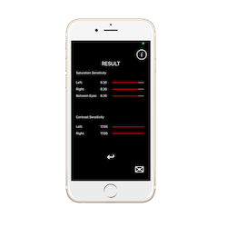

Red Eye Test
Medical iOS application
Optic Nerve Pathology Diagnosis
About The App
This is a red desaturation test approached quantitatively
by using the color difference formula
CIE94
provided by the International Commission on Illumination
in minimizing perceptual non-uniformities.
NOTE: This is NOT a diagnostic test but rather a bedside tool for physicians reference in assessing optic nerve pathology.
Try This App
Red Eye Test is available on Apple App Store. Please search "RedITest" to find it.
Supervisor: Dr. George Medvedev
Software Developer: Joseph Chang + Shelly Han
See in StoreFeatures
There are four main features of this Application.
The test is separeted into three parts, together with all the steps,
users could get an accurate result of their eyes' red desaturation level.
Step 1
Saturation Test on Both Eyes(Tested Individually)

Step 2
Saturation Sensitivity Difference(Tested at the same time)

Step 3
Contrast Testing(Tested Individually)
Step 4
See the Results(Less than 4 is Normal)
